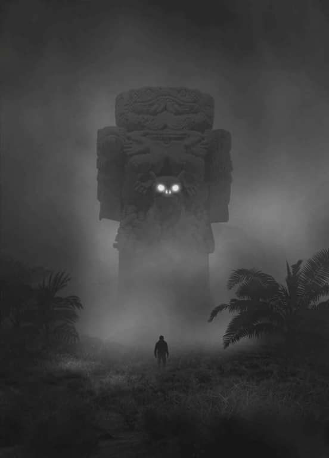

El verdadero Origen del Día de Muertos en México. [Imagen: " COATLICUE "]'
Para tener conciencia de la vida se requiere tener conciencia de la muerte.
Un rostro propio y un corazón verdadero.
Nuestros abuelos de Anahuac nos dejaron una esencia y herencia luminosa un gran legado filosófico-espiritual, ellos fueron grandes pensadores antes que guerreros. El concepto de la muerte, ocupa un lugar fundamental, al ser parte de la dualidad de la vida. Su origen es: la era preCuauhtemica cuando al finalizar las lluvias se levantaba la cosecha y la abundancia alcanzaba hasta para compartir a los muertos...
En relación a lo anterior se veneraba al fuego como referencia a la vida. ya que el calor que emite nuestro ser es un regalo, cuando un cuerpo muere inmediatamente comienza a perder su calor y se enfría en un inevitable abrazo final.
¿Entonces por qué festejar a la muerte?
Nadie, nadie en su sano juicio puede festejar a la muerte, realmente "la evocamos para evitarla". Veneramos la muerte por que a través de su feroz y descarnada imagen nos sirve de impactante recordatorio; ya que puede estar tan cerca... como la distancia de uno de nuestros brazos. Así entonces hay que aprovechar todos y cada uno de los días de la vida de manera impecable. Antes de que ella llegue.

Representación de Mictlantecuhtli y Guerrero Aguila. Museo: Templo Mayor. CDMX.
El problema es que crees que eres eterno.
La Muerte, no parará hasta alcanzarnos. Y será cuando todo el vacío, toda la irresponsabilidad existencial, nos alcanzará brutalmente de súbito y como frágiles copas de cristal, caeremos, por la inercia de la materia y sus poderosas fuerzas gravitatorias.
En efecto, la osamenta representa la parte imperecedera del cuerpo humano. El cráneo es la última parte en desintegrarse de una osamenta y es tomada como un símbolo para referirse a la presencia eterna del espíritu. De modo que los viejos abuelos cuando usaban un cráneo, se referían poeticamente a la vida eterna espiritual.
Se entiende que para nuestros ancestros la vida era la oportunidad de evolucionar en lo individual y en lo colectivo. Cada sol (periodo de tiempo) fue un intento por buscar la perfección, no sólo del ser humano, sino de la misma tierra. Esta era la esencia de la vida y en ello, los seres humanos compartían con los dioses, la sagrada misión de mejorar el mundo y la vida.

La Catrina y el Charro Negro
Tiempo finito.
Un guerrero desapegado, sabiendo que no tiene posibilidad de poner vallas a su muerte, sólo tiene una cosa que le respalda: el poder de sus decisiones. Tiene que ser, por así decirlo, el amo de su elección. Debe comprender por completo que su preferencia es su responsabilidad y una vez que hace su elección, no queda tiempo para lamentos ni dudas o recriminaciones. Las decisiones de un guerrero son definitivas, simplemente porque su muerte no le da tiempo de adherirse a nada. La muerte es la única consejera sabia que tenemos. Cada vez que sientas, que todo te está saliendo mal y que estás a punto de ser aniquilado, vuélvete hacia tu muerte y pregúntale si eso es cierto. Tu muerte te dirá que te equivocas; que nada importa en realidad más que su toque.

Poema de Nezahualcoyotl.
¿Acaso de verdad se vive en la tierra? No para siempre en la tierra: sólo un poco aquí. Aunque sea jade se quiebra, aunque sea oro se rompe, aunque sea plumaje de quetzal se desgarra, no para siempre en la tierra: sólo un poco aquí.
“¿Con qué he de irme?
¿Nada dejaré en pos de mí sobre la tierra?
¿Cómo ha de actuar mi corazón?
¿Acaso en vano venimos a vivir,
a brotar sobre la tierra?
Dejemos al menos flores
dejemos al menos cantos”
D U A L I D A D

Imagen: representación de la " dualidad ": "Ometeotl": (Toltecas) / "Hunabku": (Mayas) una misma raiz filosofica, nuestros antepasados definieron como un par de opuestos complementarios a la vida y a la muerte. Dualidad que se opone y al mismo tiempo se necesita.
PUES NO PUEDE HABER VIDA SIN LA MUERTE Y MUERTE SIN LA VIDA. (Luz-Oscuridad / Hombre-Mujer / Bueno-Malo etc. )
L I N A J E

El linaje de nuestra sangre originaria sigue vigente, celebrar la fiesta del día de muertos con profunda, auténtica emoción, apegados a la tradición y a la costumbre, es iniciar un viaje al corazón del México profundo, un encuentro con nosotros mismos.
Ademas en fechas de día de muertos, se festeja el sentimiento mas ¡fuerte! capaz de perdurar en el tiempo y espacio, sí el "Amor". En este caso el amor a los seres queridos que se encuentran en otra dimensión, pero los mexicanos queremos tanto a nuestros "difuntos" que sentimos bonito al creer que por lo menos un par de dias al año, nuestro seres queridos que ya partieron vengan con nosotros un ratito más...
Fuentes
• http://toltecayotl.org/tolteca/Filosofía del Anáhuac
• http://toltecayotl.org/tolteca/Todos ante la muerte
• http://toltecayotl.org/tolteca/La percepción filosófica de la muerte y la vida
• http://toltecayotl.org/tolteca/Los guerreros de la muerte florecida.
• Libro: viaje a Ixtlan Autor: Carlos Castaneda.
Contacto e informes: jaissiel@outlook.com Telefono 998-238-30-28 powered by studio WetXzkA

👾 Será el núcleo de tu negocio. Existen millones de clientes potenciales buscando en la internet ☄️
Leer más....jpg )

🍸 Una guía para sobrevivir a los negocios y encontrar el equilibrio en la vida. 🌌
Leer más...
🦎 Su nombre viene del vocablo "mangrove" que significa arbol retorcido. 🐊
Leer más...
🌴 1.- Conocer la barrera de arrecifes más grande de México... 😎
Leer más...
🌊 Toneladas de substancias de protección solar terminan en los arrecifes de coral. 🌎
Leer más...